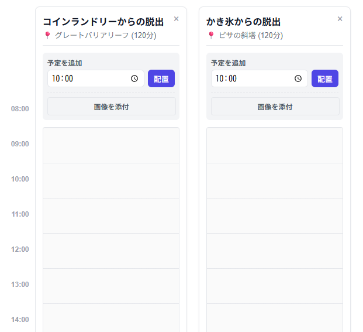
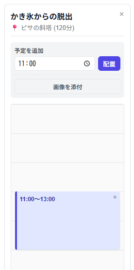
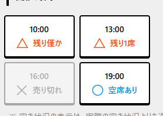
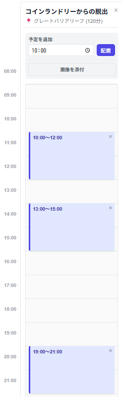
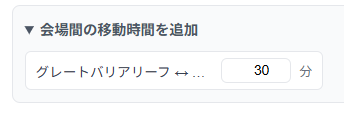
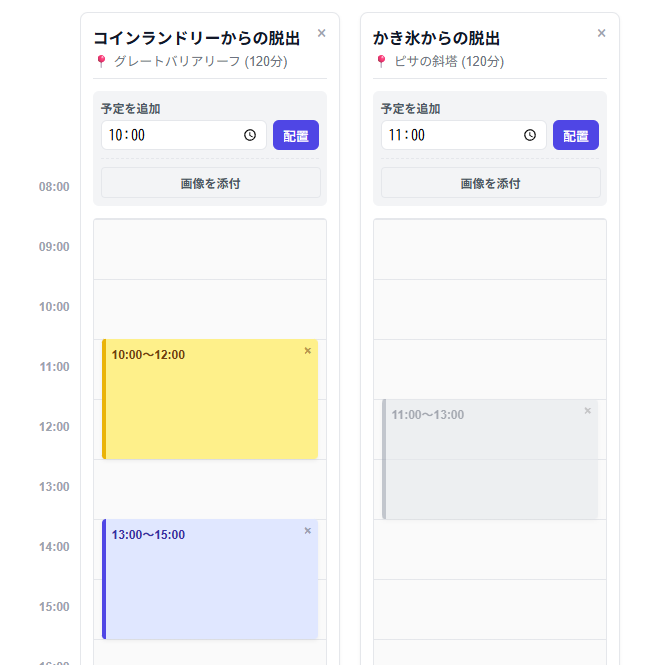
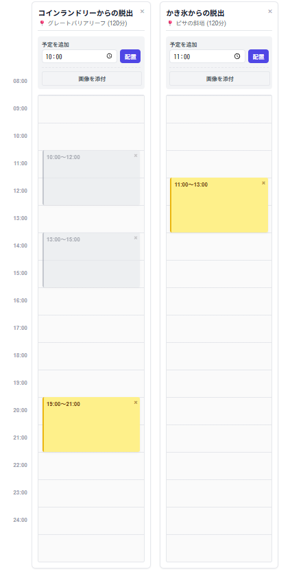

ハシゴツール(仮) 使用方法
謎解き公演のハシゴ計画を補助するツールです。 ベータ版ですので、不具合等あればTwitterでご連絡ください。使用方法
参加したい公演の追加
まずは参加したい公演の公演名・会場・所要時間を上の欄に入力し、「追加」ボタンを押下してください。 すると画面の下部に以下のようなタイムテーブルが追加されます。
公演時間の追加
公演枠の追加方法は2通りあります。 「予定を追加」の下にある入力欄に時間を入力し「配置」を押下すると、枠が追加されます。 例として、「かき氷からの脱出」において11:00と入力した状態で「配置」を押下すると次のようになります。
またESCAPE.idにおいてチケットが発売されている場合、チケットの空き状況のスクリーンショットを「画像を添付」ボタンを経由して添付することによって自動で枠を追加することもできます。 例として「コインランドリーからの脱出」において次の画像を添付しましょう。
するとタイムテーブルに次のように枠が確保されます。
移動時間の追加
会場が複数する存在場合、「会場間の移動時間を追加」を展開することにより、移動時間を追加することができます。 ここではグレートバリアリーフとピサの斜塔の間の移動時間を30分としておきます。
計画の作成
必要な公演の情報を入力出来たら、計画の作成を行うことができます。 手動で行う場合、参加したい枠をクリックもしくはタップすることによりその枠を確保することができます。 それと同時に、時間が被っていて参加できない公演はグレーアウトされます。 例として、「コインランドリーからの脱出」の10:00回を確保した場合、画面は次のように変化します。
また画面上部の「計画を立てる」ボタンを押下することにより、自動でハシゴ計画を立てることもできます。 ただし、入力した公演すべてにすべてに参加することができない場合はその旨を表示します。 この例ではボタンを押下することにより、次の計画を作成することができました。
計画の出力
最後に画面最下部の「スケジュールを出力」を押下することにより、スケジュールを出力することができます。.png)